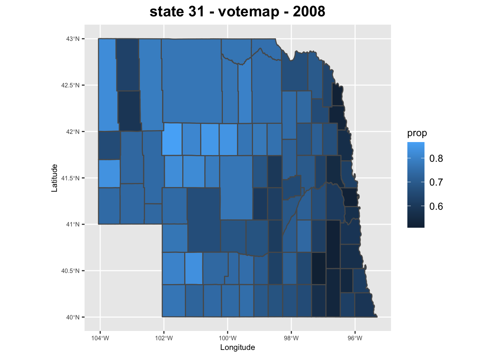
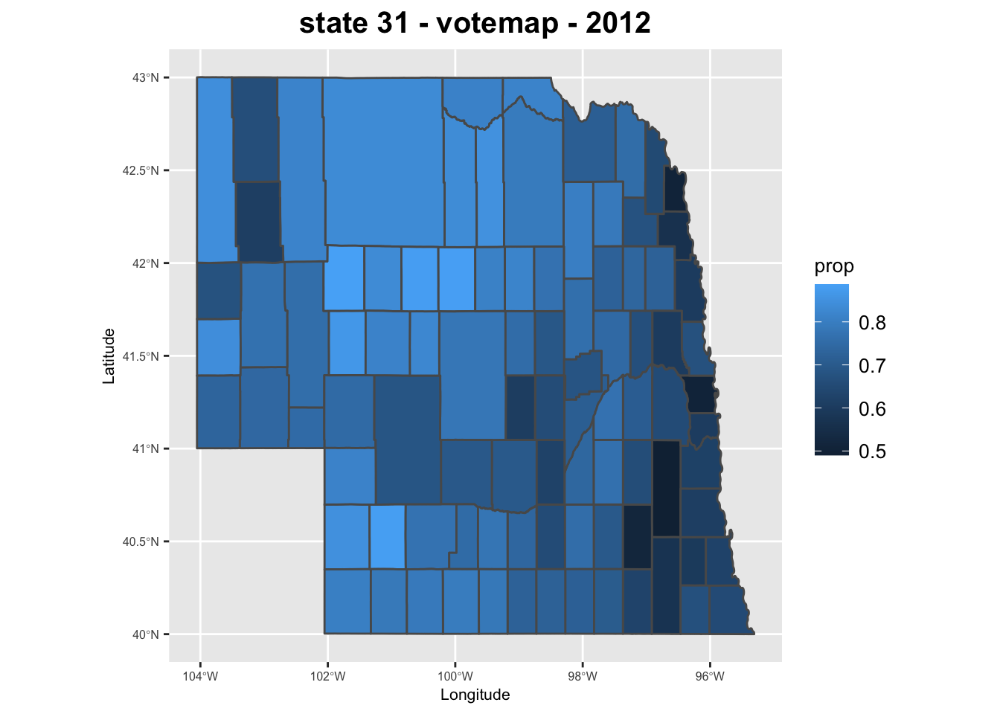
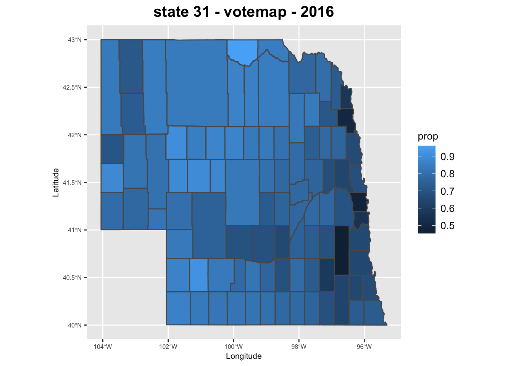
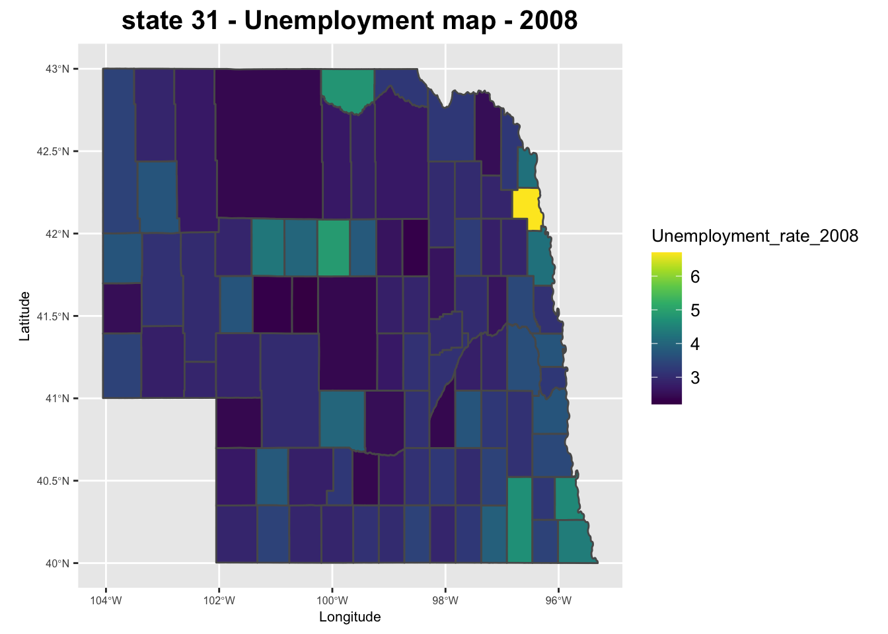
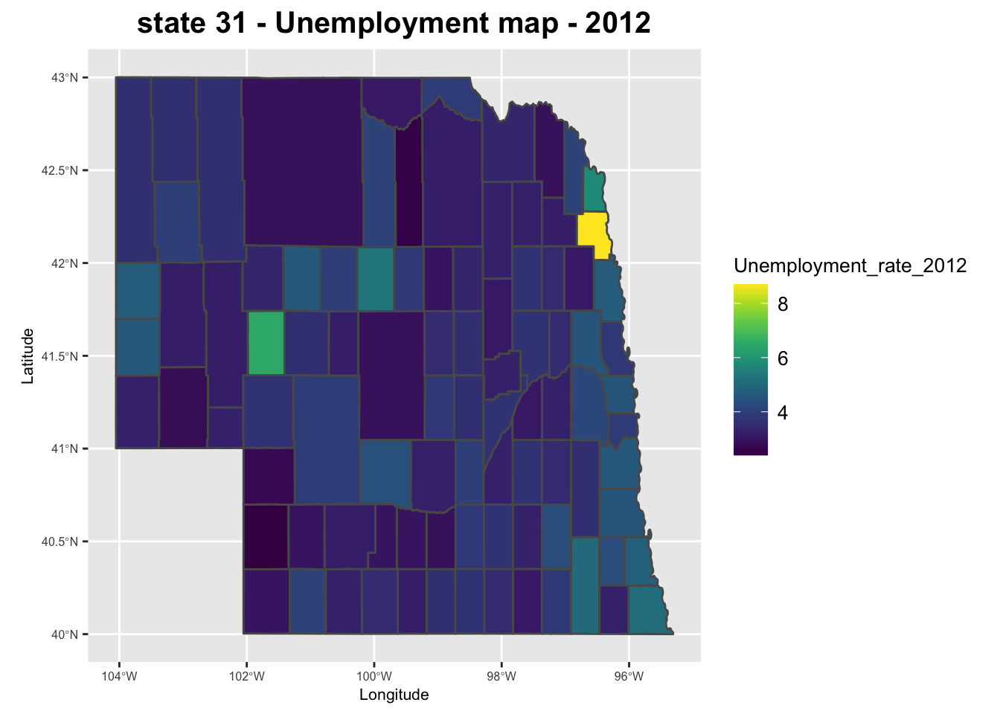
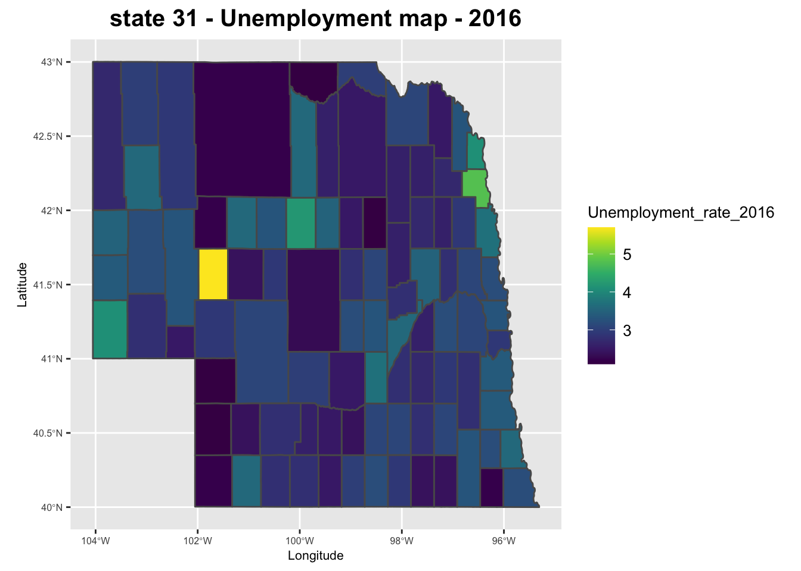

library(readxl)
library(sqldf)## Loading required package: gsubfn## Loading required package: proto## Warning in doTryCatch(return(expr), name, parentenv, handler): unable to load shared object '/Library/Frameworks/R.framework/Resources/modules//R_X11.so':
## dlopen(/Library/Frameworks/R.framework/Resources/modules//R_X11.so, 6): Library not loaded: /opt/X11/lib/libSM.6.dylib
## Referenced from: /Library/Frameworks/R.framework/Versions/4.0/Resources/modules/R_X11.so
## Reason: image not found## Could not load tcltk. Will use slower R code instead.## Loading required package: RSQLitelibrary(stringr)
library(ggplot2)
library(sf)## Linking to GEOS 3.8.1, GDAL 3.1.4, PROJ 6.3.1library(viridis)## Loading required package: viridisLiteload vote dataset
vote <- read.csv("./all_dataset/countypres_2000-2016.csv")
head(vote)## year state state_po county FIPS office candidate party
## 1 2000 Alabama AL Autauga 1001 President Al Gore democrat
## 2 2000 Alabama AL Autauga 1001 President George W. Bush republican
## 3 2000 Alabama AL Autauga 1001 President Ralph Nader green
## 4 2000 Alabama AL Autauga 1001 President Other <NA>
## 5 2000 Alabama AL Baldwin 1003 President Al Gore democrat
## 6 2000 Alabama AL Baldwin 1003 President George W. Bush republican
## candidatevotes totalvotes version
## 1 4942 17208 20191203
## 2 11993 17208 20191203
## 3 160 17208 20191203
## 4 113 17208 20191203
## 5 13997 56480 20191203
## 6 40872 56480 20191203load unemployment dataset
unemployment <- read_excel("./all_dataset/A6_data/Unemployment.xls",sheet="Unemployment Med HH Income")## New names:
## * `` -> ...2
## * `` -> ...3
## * `` -> ...4
## * `` -> ...5
## * `` -> ...6
## * ...unemployment <- na.omit(unemployment)
colnames(unemployment) <- unemployment[1,]
unemployment <- unemployment[-1,]You will extract from the datasets the proportion of the vote won by either the Democratic or Republican candidate for each county for each of the three elections.
vote["prop"] <- vote["candidatevotes"]/vote["totalvotes"]
##table(vote["year"])
#select 3 election year: 2008,2012,2016
vote <- vote[vote$year %in% c(2008,2012,2016),]
vote <- na.omit(vote)
table(vote["year"])##
## 2008 2012 2016
## 6308 6308 6306winner_df <- sqldf("SELECT year, FIPS, max(prop) AS winner_prop from vote GROUP BY year, FIPS")
vote <- sqldf("SELECT vote.* from vote INNER JOIN winner_df ON winner_df.year=vote.year AND winner_df.FIPS=vote.FIPS AND winner_df.winner_prop=vote.prop")
#convert int to char
vote$FIPS <- as.character(vote$FIPS)
vote$FIPS <- str_pad(vote$FIPS, 5, pad = "0")
names(vote)[names(vote)=="FIPS"] <- "GEOID"You will also extract the unemployment rates for each county for each of the three election years
unemployment_rates <- unemployment[,c("FIPStxt","Unemployment_rate_2008","Unemployment_rate_2012","Unemployment_rate_2016")]
unemployment_rates[,c("Unemployment_rate_2008","Unemployment_rate_2012","Unemployment_rate_2016")] <- sapply(unemployment_rates[,c("Unemployment_rate_2008","Unemployment_rate_2012","Unemployment_rate_2016")],as.numeric)
names(unemployment_rates)[names(unemployment_rates)=="FIPStxt"] <- "GEOID"load shape file
shapefile=st_read("./all_dataset/A6_data/tl_2019_us_county-1/tl_2019_us_county.shp")## Reading layer `tl_2019_us_county' from data source `/Users/jianingsun/ANLY503_Portfolio_JianingSun/all_dataset/A6_data/tl_2019_us_county-1/tl_2019_us_county.shp' using driver `ESRI Shapefile'
## Simple feature collection with 3233 features and 17 fields
## geometry type: MULTIPOLYGON
## dimension: XY
## bbox: xmin: -179.2311 ymin: -14.60181 xmax: 179.8597 ymax: 71.43979
## geographic CRS: NAD83#to make plot quicker, we only filter out the statefp="31"
map_geo = shapefile[shapefile$STATEFP=="31",]
rm(shapefile)The proportion of the vote won by your chosen candidate in each county for each of the three elections, based on a map of US counties represented in the shape files mentioned above (3 choropleths) -year 2008
votemap_2008 <- merge(map_geo, vote[vote$year==2008,], by=c("GEOID"),duplicateGeoms = TRUE)
ggplot(votemap_2008) +geom_sf(aes(geometry=geometry,fill=prop))+xlab('Longitude')+ylab('Latitude')+ggtitle("state 31 - votemap - 2008")+theme(plot.title = element_text(color = "black", size = 15, vjust = 1,hjust = 0.5, face="bold"),
legend.title = element_text(color = "black", size = 10),
legend.text = element_text(color = "black", size = 10),
legend.position="right",
panel.spacing.x=unit(5, "lines"), aspect.ratio =1,
axis.text=element_text(size=6),
axis.title=element_text(size=8)) -year 2012
votemap_2012 <- merge(map_geo, vote[vote$year==2012,], by=c("GEOID"),duplicateGeoms = TRUE)
ggplot(votemap_2012) +geom_sf(aes(geometry=geometry,fill=prop))+xlab('Longitude')+ylab('Latitude')+ggtitle("state 31 - votemap - 2012")+theme(plot.title = element_text(color = "black", size = 15, vjust = 1,hjust = 0.5, face="bold"),
legend.title = element_text(color = "black", size = 10),
legend.text = element_text(color = "black", size = 10),
legend.position="right",
panel.spacing.x=unit(5, "lines"), aspect.ratio =1,
axis.text=element_text(size=6),
axis.title=element_text(size=8)) -year 2016
votemap_2016 <- merge(map_geo, vote[vote$year==2016,], by=c("GEOID"),duplicateGeoms = TRUE)
ggplot(votemap_2016) +geom_sf(aes(geometry=geometry,fill=prop))+xlab('Longitude')+ylab('Latitude')+ggtitle("state 31 - votemap - 2016")+theme(plot.title = element_text(color = "black", size = 15, vjust = 1,hjust = 0.5, face="bold"),
legend.title = element_text(color = "black", size = 10),
legend.text = element_text(color = "black", size = 10),
legend.position="right",
panel.spacing.x=unit(5, "lines"), aspect.ratio =1,
axis.text=element_text(size=6),
axis.title=element_text(size=8))
The unemployment rate in each county for each of the three election years (2008, 2012, 2016) using the US map of counties based on the same shapefiles as above. (3 choropleths) -year 2008
unemploymap_2008 <- merge(map_geo, unemployment_rates[,c("GEOID","Unemployment_rate_2008")], by=c("GEOID"),duplicateGeoms = TRUE)
ggplot(unemploymap_2008) +geom_sf(aes(geometry=geometry,fill=Unemployment_rate_2008))+xlab('Longitude')+scale_fill_gradientn(colors = viridis(10))+ylab('Latitude')+ggtitle("state 31 - Unemployment map - 2008")+theme(plot.title = element_text(color = "black", size = 15, vjust = 1,hjust = 0.5, face="bold"),
legend.title = element_text(color = "black", size = 10),
legend.text = element_text(color = "black", size = 10),
legend.position="right",
panel.spacing.x=unit(5, "lines"), aspect.ratio =1,
axis.text=element_text(size=6),
axis.title=element_text(size=8))
-year 2012
unemploymap_2012 <- merge(map_geo, unemployment_rates[,c("GEOID","Unemployment_rate_2012")], by=c("GEOID"),duplicateGeoms = TRUE)
ggplot(unemploymap_2012) +geom_sf(aes(geometry=geometry,fill=Unemployment_rate_2012))+xlab('Longitude')+scale_fill_gradientn(colors = viridis(10))+ylab('Latitude')+ggtitle("state 31 - Unemployment map - 2012")+theme(plot.title = element_text(color = "black", size = 15, vjust = 1,hjust = 0.5, face="bold"),
legend.title = element_text(color = "black", size = 10),
legend.text = element_text(color = "black", size = 10),
legend.position="right",
panel.spacing.x=unit(5, "lines"), aspect.ratio =1,
axis.text=element_text(size=6),
axis.title=element_text(size=8))
-year 2016
unemploymap_2016 <- merge(map_geo, unemployment_rates[,c("GEOID","Unemployment_rate_2016")], by=c("GEOID"),duplicateGeoms = TRUE)
ggplot(unemploymap_2016) +geom_sf(aes(geometry=geometry,fill=Unemployment_rate_2016))+xlab('Longitude')+scale_fill_gradientn(colors = viridis(10))+ylab('Latitude')+ggtitle("state 31 - Unemployment map - 2016")+theme(plot.title = element_text(color = "black", size = 15, vjust = 1,hjust = 0.5, face="bold"),
legend.title = element_text(color = "black", size = 10),
legend.text = element_text(color = "black", size = 10),
legend.position="right",
panel.spacing.x=unit(5, "lines"), aspect.ratio =1,
axis.text=element_text(size=6),
axis.title=element_text(size=8))